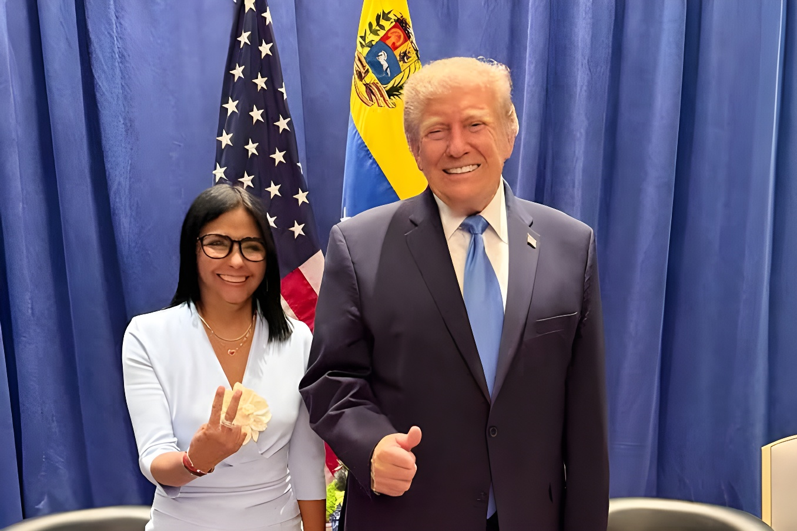

Près de neuf mois après la capture de Nicolás Maduro par l'armée américaine, Delcy Rodríguez a rencontré Donald Trump en marge de l'Assemblée générale de l'ONU, à New York. Ce tête-à-tête à huis clos, le mardi 22 septembre, est leur premier en personne depuis qu'elle assure l'intérim de la présidence vénézuélienne. Selon Caracas et Washington, il a porté sur la coopération énergétique, minière et sécuritaire ainsi que sur la restructuration de la dette du pays, tandis que l'opposition, elle, reste à distance de la scène.
Le 3 janvier 2026, une opération militaire américaine à Caracas aboutit à la capture de Nicolás Maduro et de son épouse Cilia Flores, transférés à New York pour y être jugés. Delcy Rodríguez, alors vice-présidente, prête serment comme présidente par intérim le 5 janvier : elle est la première femme à exercer le pouvoir présidentiel au Venezuela. Depuis, l'administration Trump a soutenu ce gouvernement de transition et rétabli les relations diplomatiques rompues en 2019. En août, les deux capitales ont conclu l'accord pétrolier présenté par Donald Trump comme « historique ».
L'Assemblée générale offre à Mme Rodríguez une scène que le Venezuela n'avait plus occupée depuis 2018, année du dernier discours de Nicolás Maduro à la tribune onusienne. Arrivée à New York le lundi 21 septembre, la présidente par intérim y a enchaîné les rendez-vous — António Guterres, FMI, Banque mondiale, BID — avant de retrouver Donald Trump.
Le mardi 22 septembre au matin, Donald Trump prononce son discours devant l'Assemblée générale. Il y qualifie Maduro de « dictateur hors-la-loi », affirme que des centaines de prisonniers politiques ont été libérés depuis sa capture et présente l'opération comme la preuve que les États-Unis useront de leur « puissance militaire inégalée » pour protéger leurs intérêts dans l'hémisphère occidental. Évoquant l'accord pétrolier d'août, il déclare : « Au vainqueur reviennent les richesses ».
Le soir même, vers 19h40 (heure de New York), il reçoit Delcy Rodríguez à l'hôtel Lotte New York Palace, lors d'une réception offerte aux dirigeants étrangers pour la semaine de haut niveau de l'ONU. La Maison-Blanche a confirmé cet aparté sans en détailler le contenu ; ce sont Mme Rodríguez, sur X, puis Marco Rubio, le lendemain, qui en ont dévoilé les grandes lignes. Étaient présents le secrétaire d'État, le secrétaire au Trésor Scott Bessent, la cheffe de cabinet Susie Wiles et son adjoint Stephen Miller.
Delcy Rodríguez parle d'une « réunion historique » consacrée au renforcement de la relation bilatérale et à une coopération dans des domaines stratégiques : énergie, mines, sécurité. Elle a aussi remercié Donald Trump pour son soutien à la réintégration du Venezuela dans les espaces multilatéraux et pour l'aide de la Maison-Blanche après le séisme du 24 juin. Marco Rubio a, lui, jugé la rencontre « courte mais importante ».
Capture de Nicolás Maduro à Caracas. Delcy Rodríguez prête serment comme présidente par intérim.
Signature de l'accord pétrolier entre Caracas et Washington.
Arrivée de Mme Rodríguez à New York, accueillie par John Barrett, plus haut diplomate américain au Venezuela. Rencontres avec la BID, António Guterres, le FMI et la Banque mondiale.
Ouverture de la 81e session de l'Assemblée générale. Discours de Donald Trump ; Delcy Rodríguez salue Pedro Sánchez et lui demande de maintenir ouvert le dialogue sur l'avenir du Venezuela, selon le gouvernement espagnol.
Aparté Trump–Rodríguez à l'hôtel Lotte New York Palace.
Marco Rubio détaille les sujets abordés. Le discours de Mme Rodríguez à l'ONU, initialement prévu jeudi, est avancé à mercredi, 17h30 (heure de New York).
Selon Marco Rubio, la restructuration de la dette souveraine du Venezuela a été un sujet central. Il décrit la dette de Caracas comme probablement la plus lourde au monde à restructurer et affirme que Washington veut aider, à condition que le processus soit mené correctement. Le secrétaire d'État a aussi indiqué que les deux dirigeants avaient évoqué les réformes économiques et le processus de transition politique, qu'il dit engagé.
| Indicateur | Montant | Source |
|---|---|---|
| Obligations en défaut (État + PDVSA) | ~60 Mds $ | Reuters |
| Passif total (intérêts, arbitrages) | > 150 Mds $ | Analystes, via Reuters |
| Dette fin 2024 | ~164 Mds $ | Transparencia Venezuela |
« Nous avons eu une réunion historique avec le président des États-Unis, Donald Trump. »
— Delcy Rodríguez, sur X, après la rencontre« La restructuration de la dette en est une clé. »
— Marco Rubio, à New York, 23 septembre 2026Face à l'image d'un rapprochement, l'opposition reste en retrait. Le prix Nobel de la paix 2025, María Corina Machado, a quitté le Venezuela en décembre 2025 et se trouve au Panama. Son équipe affirme qu'elle a tenté à trois reprises, par voie maritime et aérienne, de rentrer pendant le séjour de Mme Rodríguez à New York — au moins sept tentatives en tout — sans y parvenir. Les autorités panaméennes ne se sont pas exprimées. Aucune rencontre n'est prévue entre Donald Trump et elle ; leur dernier échange connu remonte à la mi-janvier.
Le président brésilien Lula a, dans un entretien à CNN, jugé que la manière dont Washington traite Delcy Rodríguez donne l'impression qu'il lui donne des ordres : « Si j'étais Delcy, je convoquerais des élections au plus vite. » Aucune date d'élection présidentielle n'est fixée à ce stade ; un dialogue entre chavisme et opposition se poursuit à Caracas, sans participation directe de Machado ni d'Edmundo González. Le 21 septembre, l'ONU a par ailleurs réclamé la fin de la censure et du blocage de médias au Venezuela.
Pour Caracas, la rencontre de New York est un jalon : après des années d'isolement, Delcy Rodríguez retrouve la tribune onusienne et un dialogue direct avec la Maison-Blanche, alors que les priorités affichées — énergie, mines, sécurité, dette — sont avant tout économiques et stratégiques. Pour Washington, le partenariat avec le gouvernement de transition sert ses intérêts énergétiques et financiers, comme Donald Trump l'a rappelé à la tribune de l'ONU. Reste la question que soulèvent Lula, l'ONU et l'opposition : quand le Venezuela retrouvera-t-il un calendrier électoral, et avec quelle marge d'autonomie face à son puissant partenaire ? Le discours de Mme Rodríguez à l'Assemblée générale, attendu mercredi 23 septembre, puis le procès de Maduro, prévu en juin 2027, seront deux nouveaux moments de vérité.
Casi nueve meses después de la captura de Nicolás Maduro por el ejército estadounidense, Delcy Rodríguez se reunió con Donald Trump al margen de la Asamblea General de la ONU, en Nueva York. Este encuentro a puerta cerrada, el martes 22 de septiembre, es el primero en persona desde que ella ejerce la presidencia interina de Venezuela. Según Caracas y Washington, se abordó la cooperación energética, minera y de seguridad, así como la reestructuración de la deuda del país, mientras la oposición permanece al margen de la escena.
El 3 de enero de 2026, una operación militar estadounidense en Caracas culmina con la captura de Nicolás Maduro y de su esposa Cilia Flores, trasladados a Nueva York para ser juzgados. Delcy Rodríguez, entonces vicepresidenta, jura el cargo como presidenta interina el 5 de enero: es la primera mujer que ejerce el poder presidencial en Venezuela. Desde entonces, la administración Trump ha respaldado a este gobierno de transición y ha restablecido las relaciones diplomáticas rotas en 2019. En agosto, ambas capitales concluyeron el acuerdo petrolero presentado por Donald Trump como «histórico».
La Asamblea General ofrece a la señora Rodríguez un escenario que Venezuela no ocupaba desde 2018, año del último discurso de Nicolás Maduro en la tribuna de la ONU. Llegada a Nueva York el lunes 21 de septiembre, la presidenta interina encadenó reuniones —António Guterres, FMI, Banco Mundial, BID— antes de reencontrarse con Donald Trump.
El martes 22 de septiembre por la mañana, Donald Trump pronuncia su discurso ante la Asamblea General. Califica a Maduro de «dictador fuera de la ley», afirma que cientos de presos políticos han sido liberados desde su captura y presenta la operación como prueba de que Estados Unidos usará su «poder militar sin igual» para proteger sus intereses en el hemisferio occidental. Al referirse al acuerdo petrolero de agosto, declara: «Al vencedor le pertenecen las riquezas».
Esa misma noche, hacia las 19:40 (hora de Nueva York), recibe a Delcy Rodríguez en el hotel Lotte New York Palace, durante una recepción ofrecida a los líderes extranjeros con motivo de la Semana de Alto Nivel de la ONU. La Casa Blanca confirmó este aparte sin detallar su contenido; fueron la señora Rodríguez, en X, y luego Marco Rubio, al día siguiente, quienes revelaron sus líneas generales. Estaban presentes el secretario de Estado, el secretario del Tesoro Scott Bessent, la jefa de gabinete Susie Wiles y su adjunto Stephen Miller.
Delcy Rodríguez habla de una «histórica reunión» dedicada al fortalecimiento de la relación bilateral y a la cooperación en áreas estratégicas: energía, minería, seguridad. También agradeció a Donald Trump su apoyo al proceso de reintegración de Venezuela en los espacios multilaterales y la ayuda de la Casa Blanca tras el terremoto del 24 de junio. Marco Rubio, por su parte, calificó el encuentro de «breve pero importante».
Captura de Nicolás Maduro en Caracas. Delcy Rodríguez jura el cargo como presidenta interina.
Firma del acuerdo petrolero entre Caracas y Washington.
Llegada de la señora Rodríguez a Nueva York, recibida por John Barrett, el mayor diplomático estadounidense en Venezuela. Reuniones con el BID, António Guterres, el FMI y el Banco Mundial.
Apertura del 81.º período de sesiones de la Asamblea General. Discurso de Donald Trump; Delcy Rodríguez saluda a Pedro Sánchez y le pide mantener abierto el diálogo sobre el futuro de Venezuela, según el Gobierno español.
Aparte Trump–Rodríguez en el hotel Lotte New York Palace.
Marco Rubio detalla los temas tratados. El discurso de la señora Rodríguez ante la ONU, previsto inicialmente para el jueves, se adelanta al miércoles a las 17:30 (hora de Nueva York).
Según Marco Rubio, la reestructuración de la deuda soberana de Venezuela fue un tema central. Describe la deuda de Caracas como probablemente la más abultada del mundo por reestructurar y afirma que Washington quiere ayudar, siempre que el proceso se haga correctamente. El secretario de Estado indicó además que ambos mandatarios hablaron de las reformas económicas y del proceso de transición política, que asegura en marcha.
| Indicador | Monto | Fuente |
|---|---|---|
| Bonos en impago (Estado + PDVSA) | ~60.000 M $ | Reuters |
| Pasivo total (intereses, laudos) | > 150.000 M $ | Analistas, vía Reuters |
| Deuda a finales de 2024 | ~164.000 M $ | Transparencia Venezuela |
« Sostuvimos una histórica reunión con el presidente de los Estados Unidos, Donald Trump. »
— Delcy Rodríguez, en X, tras el encuentro« La reestructuración de la deuda es clave para ello. »
— Marco Rubio, en Nueva York, 23 de septiembre de 2026Frente a la imagen de acercamiento, la oposición sigue al margen. La premio Nobel de la Paz 2025, María Corina Machado, salió de Venezuela en diciembre de 2025 y se encuentra en Panamá. Su equipo afirma que intentó tres veces, por vía marítima y aérea, regresar durante la estancia de la señora Rodríguez en Nueva York —al menos siete intentos en total— sin conseguirlo. Las autoridades panameñas no se han pronunciado. No está prevista ninguna reunión entre Donald Trump y ella; su último encuentro conocido se remonta a mediados de enero.
El presidente brasileño Lula, en una entrevista con CNN, opinó que la forma en que Washington trata a Delcy Rodríguez da la impresión de que le da órdenes: «Si yo fuera Delcy, convocaría a elecciones lo antes posible». No hay fecha fijada para unas presidenciales; prosigue en Caracas un diálogo entre chavismo y oposición, sin participación directa de Machado ni de Edmundo González. El 21 de septiembre, la ONU reclamó además el fin de la censura y del bloqueo de medios en Venezuela.
Para Caracas, la reunión de Nueva York es un hito: tras años de aislamiento, Delcy Rodríguez recupera la tribuna de la ONU y un diálogo directo con la Casa Blanca, mientras que las prioridades declaradas —energía, minería, seguridad, deuda— son ante todo económicas y estratégicas. Para Washington, la alianza con el gobierno de transición sirve a sus intereses energéticos y financieros, como recordó Donald Trump desde la tribuna de la ONU. Queda la pregunta que plantean Lula, la ONU y la oposición: ¿cuándo recuperará Venezuela un calendario electoral, y con qué margen de autonomía frente a su poderoso socio? El discurso de la señora Rodríguez ante la Asamblea General, previsto para el miércoles 23 de septiembre, y después el juicio a Maduro, previsto para junio de 2027, serán dos nuevos momentos de verdad.